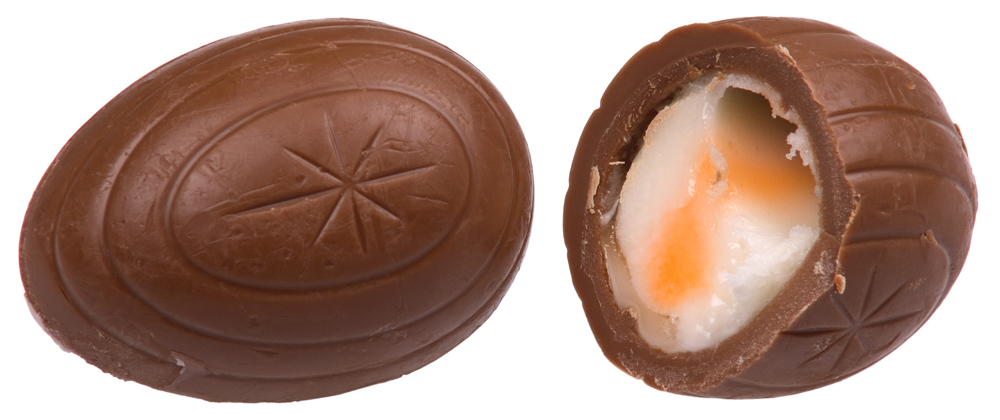

Chocolate Trivia Quiz
Are you a chocolate connoisseur?

Do you love chocolate enough to be able to know everything about it? Take this quiz to find out!
-
In what year did the Cadbury company produce the first chocolate bar in England?
- A. 1900
- B. 1810
- C. 1776
- D. 1842
-
Which was the first candy bar to combine chocolate with crisped rice?
- A. Nestle Crunch
- B. Rice Krispies
- C. Krackel
- D. World Finest Chocolate
-
Which chocolatier launched a program in 2012 to "celebrate inspirational women around the world"?
- A. Hershey's
- B. Ghirardelli
- C. Godiva
- D. Kinder
What is the chocolate candy in the picture called?

- A. Lindor Chocolate
- B. Ghirardelli Chocolate
- C. Cadbury Creme Egg
- D. Ferrero Rocher
-
Black Forest Cake originated in the Black Forest region of which European country?
- A. Austria
- B. Germany
- C. Greece
- D. Switzerland
And that's it. Check out how you did!
Go to the Answer Key